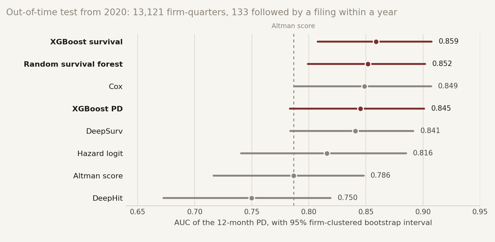

Corporate Credit Early Warning
Survival analysis · XGBoost · DeepSurv · DeepHit · Language-model signals · Agents with a numeric guardrail · Systematic review · Python · 222 tests
The business question
When a large company files for judicial recovery, the losses land on banks, bondholders, credit funds and the suppliers who sold to it on credit. Oi filed twice, in 2016 and 2023. Americanas filed in January 2023, days after it disclosed an accounting inconsistency. Light followed in May 2023. After each case a credit committee asks the same question: was there something in the public record, a year earlier, that should have changed the decision?
Since January 2025 the question also has a regulatory form. CMN Resolution 4,966 asks Brazilian lenders to provision for expected loss: the next 12 months for exposures in good standing, the whole remaining term once credit risk has increased significantly. That needs a probability of default for each horizon, not a single score, and it needs to notice the increase early.
The data
Everything is public. Quarterly and annual statements of every listed company come from the CVM open-data portal, each dated by the day it reached the regulator, so the model only sees what an analyst could have seen at the time. The auditor’s report is read for the going-concern paragraph. Material facts, the filings a company must publish when something relevant happens, carry the early news: a debt renegotiation, a covenant waiver, an asset sale to raise cash, a CFO who leaves. Interest rates, inflation, activity, unemployment and corporate default come from the Central Bank.
The hard part is the outcome. No public table lists when each listed company entered judicial or out-of-court recovery; the registry shows only the current status. The event base was rebuilt from three public traces (the registry, the filings of companies in recovery and the material facts that announce a filing), with a language model separating the company’s own filing from a customer’s or a subsidiary’s, and then checked by a second model that reads the filings of each event, under a fixed rule. It holds 106 events in 89 companies since 2011.
Method, and why this one
One panel, one test, eight models. Each listed non-financial company contributes one row per quarter, with what was known at the end of that quarter. Firms that left the market without an event stay in the data until they leave, so the sample does not keep only the survivors. The models go from the classical to the recent: the Altman score in its version for emerging markets, a discrete-time hazard logit, a Cox model, XGBoost as a classifier and as a survival model, a random survival forest, DeepSurv and DeepHit. All are trained up to 2018, skip 2019, and are tested from 2020 on, a period none of them saw.
Survival models, because the regulation asks for curves. A survival model gives the probability of default at 12, 24 and 36 months for every company and quarter, which is what lifetime expected loss needs. Whether those probabilities are calibrated, and not only whether they rank companies well, is tested separately.
Language models read the filings, and are tested like any other variable. A model reads the subject of each of about 31,000 material facts and marks eleven kinds of distress, with the company’s registered name, trade name and tax number hidden so it cannot recall how the story ended. A second model reads a sample to measure agreement, and 200 documents were read in full to see what the subject line misses. The test of whether these signals add anything was written down and committed before the test period was opened.
A credit memo that cannot invent a number. Agents assemble a memo for a credit committee: one reads the recent filings, one writes. A checker that is not a language model compares every number and date in the draft with the values the tools returned, and blocks the memo if one has no source.
Result
Corrected on 23 November 2026. An independent review of the code, after the first version went live, found errors that changed published results. The rule that reads the auditor’s going-concern paragraph also matched a standard sentence that every audit opinion carries since 2016, and the first memo on Casas Bahia wrongly cited such a paragraph. The calibration check kept unfinished windows only when they ended in a filing, which overstated the observed rates. The code was fixed, each fix with a test, and the whole test was run again; the hypotheses and the registered test did not change. The paper opens with an erratum that lists every correction and the conclusions that changed.
Version 2, 24 November 2026. A second pass fixed limits that the corrected version declared. The masking of company names cut other words (the name Oi inside “apoio”) and let trade names such as GPA through; names are now hidden as whole words, trade names included. The 1,055 subjects affected were read again and every result that uses the signals was run again: no conclusion changed. The version also adds what the plan promised and the first run left out: a table of what drives the risk and a test of the change of audit firm.

Out of time, from 2020 on, the tree ensembles rank companies best: XGBoost survival and a random survival forest reach an AUC of about 0.85 for the 12-month PD, against 0.79 for the Altman score and 0.82 for the hazard logit. They beat the Altman score even when whole companies are resampled together; their edge over the hazard logit, a well-specified benchmark, is not significant under that test. On the level of risk, at 36 months the observed rate is 2.9% and most models overestimate it, with XGBoost survival closest. The curves need recalibration on the lender’s own defaults before they feed a provision.
The signals read by the language models did not improve the registered test: an AUC of 0.798 with them and 0.816 without. The treatment of extreme values had erased the five rarest kinds of signal; a run with them kept, decided after the test was opened, gives 0.819, no gain either. Read from subject lines, these signals do not add to the accounts.
What moves the risk is mostly in the accounts. In the XGBoost model, interest coverage, working capital over assets and recent losses weigh the most; in the Cox model, losses, a going-concern paragraph, negative equity and late filing raise the hazard, and working capital and cash lower it. A change of audit firm in the past year, tested after the test period was opened and so only as an exploration, added nothing significant to any model.
Memos on four past cases, written with what was known a year before each filing, show the reach and the limit. Casas Bahia came out with a 12-month PD of 3.3%, about three times the average. Americanas, whose problem sat inside its own statements, came out below the average.
What the literature has and has not done
A systematic review under the PRISMA 2020 protocol screened 4,019 studies and included 1,642. Survival models appear in 96 of them, and only one study combines survival models with language models. Of the 59 studies with Brazilian data, one uses a survival model and none uses deep learning or a language model. Most abstracts do not say how the models were validated, and reading 60 of the studies in full does not change the picture much: 32 of them still do not say how the test set was formed, and only 10 check whether their probabilities are calibrated, which is what a provision depends on. The paper sets out the protocol, the counts and the gaps.
Applied to your portfolio
This is the Custom Forecasting package applied to default, with the guardrail of the Reliable AI Assistant on top. For a bank, a credit fund, a surety insurer or a supplier with large accounts receivable, it becomes a monitor of the companies in the portfolio: the filings read every day, a PD curve per company every month, an alert when a distress signal appears, and a memo for the credit committee in which every figure traces back to its source. It runs in your environment, and the decision stays with your people.
In public, the case names only companies that already went through a recovery. The models score every listed company, but those scores stay private.
Paper and code
Read the paper (PDF) github.com/rhozon/corporate-credit-early-warning
With Python 3.11 or later:
pip install -e ".[models,dev]"
pytest -v
python -m distress.cli events # event base from CVM filings
python -m distress.cli panel # point-in-time panel
python -m distress.cli test # the out-of-time testEvery language-model answer is cached in the repository, so the labels reproduce without an API key. The suite has 222 tests, among them one that fails the build if anything published names a company without an event next to a probability or a score. CI runs them on every push.
References
- Altman, E. I. (1968). Financial Ratios, Discriminant Analysis and the Prediction of Corporate Bankruptcy. The Journal of Finance, 23(4), 589-609. doi:10.1111/j.1540-6261.1968.tb00843.x
- Altman, E. I. (2005). An emerging market credit scoring system for corporate bonds. Emerging Markets Review, 6(4), 311-323. doi:10.1016/j.ememar.2005.09.007
- Campbell, J. Y., Hilscher, J. and Szilagyi, J. (2008). In Search of Distress Risk. The Journal of Finance, 63(6), 2899-2939. doi:10.1111/j.1540-6261.2008.01416.x
- Chen, T. and Guestrin, C. (2016). XGBoost: A Scalable Tree Boosting System. Proceedings of the 22nd ACM SIGKDD International Conference on Knowledge Discovery and Data Mining, 785-794. doi:10.1145/2939672.2939785
- Cox, D. R. (1972). Regression Models and Life-Tables. Journal of the Royal Statistical Society Series B: Statistical Methodology, 34(2), 187-202. doi:10.1111/j.2517-6161.1972.tb00899.x
- DeLong, E. R., DeLong, D. M. and Clarke-Pearson, D. L. (1988). Comparing the Areas under Two or More Correlated Receiver Operating Characteristic Curves: A Nonparametric Approach. Biometrics, 44(3), 837-845. doi:10.2307/2531595
- Ishwaran, H., Kogalur, U. B., Blackstone, E. H. and Lauer, M. S. (2008). Random survival forests. The Annals of Applied Statistics, 2(3), 841-860. doi:10.1214/08-AOAS169
- Katzman, J. L., Shaham, U., Cloninger, A., Bates, J., Jiang, T. and Kluger, Y. (2018). DeepSurv: personalized treatment recommender system using a Cox proportional hazards deep neural network. BMC Medical Research Methodology, 18(1). doi:10.1186/s12874-018-0482-1
- Lee, C., Zame, W., Yoon, J. and Van der Schaar, M. (2018). DeepHit: A Deep Learning Approach to Survival Analysis With Competing Risks. Proceedings of the AAAI Conference on Artificial Intelligence, 32(1). doi:10.1609/aaai.v32i1.11842
- Page, M. J., McKenzie, J. E., Bossuyt, P. M., Boutron, I., Hoffmann, T. C., Mulrow, C. D. et al. (2021). The PRISMA 2020 statement: an updated guideline for reporting systematic reviews. BMJ, 372, n71. doi:10.1136/bmj.n71
- Shumway, T. (2001). Forecasting Bankruptcy More Accurately: A Simple Hazard Model. The Journal of Business, 74(1), 101-124. doi:10.1086/209665